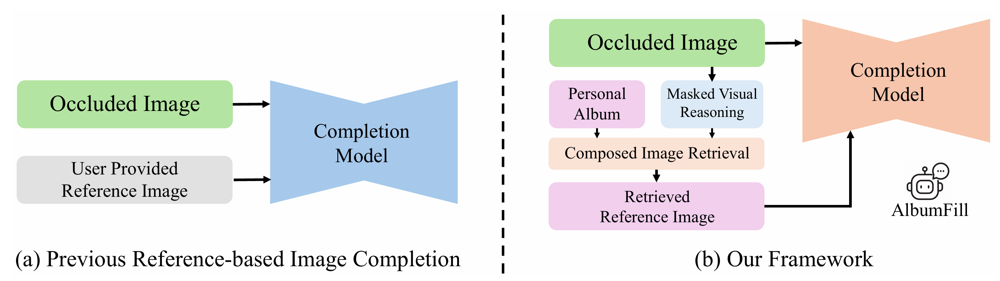
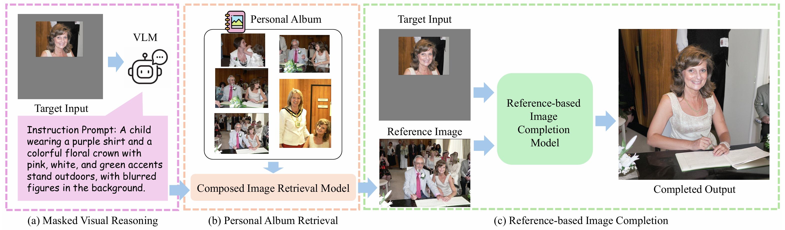
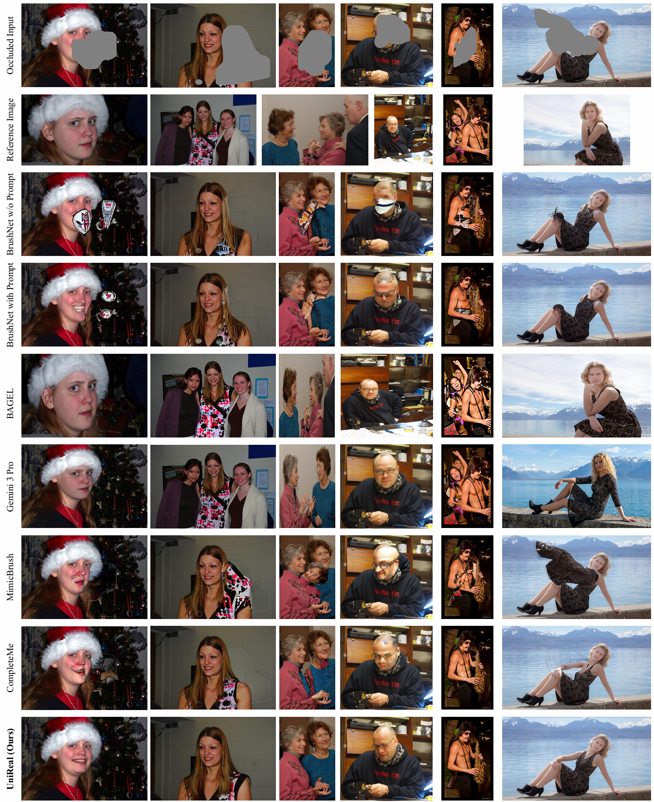

Comparison between previous reference-based image completion and our framework. (a) Previous methods assume that a suitable reference image is provided by the user, limiting their applicability when references are unavailable. (b) Our framework automatically retrieves identity-consistent references from a personal photo album. Given a masked input image, a reasoning module first infers the missing semantic cues, which are used to perform composed image retrieval from the album. The retrieved reference image is then used by a completion model to synthesize the missing region.
Personalized image completion aims to restore occluded regions in personal photos while preserving identity and appearance. Existing methods either rely on generic inpainting models that often fail to maintain identity consistency, or assume that suitable reference images are explicitly provided. In practice, suitable references are often not explicitly provided, requiring the system to search for identity-consistent images within personal photo collections. We present AlbumFill, a training-free framework that retrieves identity-consistent references from personal albums for personalized completion. Given an occluded image and a personal album, a vision-language model infers missing semantic cues to guide composed image retrieval, and the retrieved references are used by reference-based completion models. To facilitate this task, we introduce a dataset containing 54K human-centric samples with associated album images. Experiments across multiple baselines demonstrate the difficulty of personalized completion and highlight the importance of identity-consistent reference retrieval.

(a) Given a masked target image, a Vision-Language Model (VLM) performs masked visual reasoning to generate a textual hypothesis describing the likely content behind the masked region. (b) The reasoning text and visible context are used to compose a multimodal query that retrieves the most semantically aligned and identity-consistent reference image from the user’s personal album. (c) A reference-based image completion model synthesizes the final output by integrating the masked target and the retrieved reference, producing an identity-faithful and contextually coherent restoration.

Visual comparison with different categories of completion methods on our Album Benchmark. We compare our method with three types of baselines: prompt-based inpainting (BrushNet with and without prompts), MLLM-based image editing models (BAGEL and Gemini 3 Pro), and reference-based completion methods (MimicBrush and CompleteMe). Prompt-based methods often produce plausible textures but fail to preserve identity. MLLM-based approaches struggle with identity consistency or structural continuity under large occlusions. Reference-based methods rely heavily on the quality of the provided reference image. In contrast, our method retrieves identity-consistent references from personal albums and produces more coherent completions.